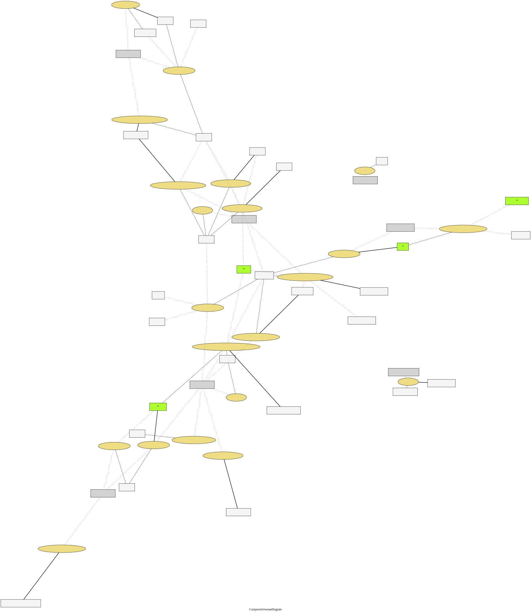

ユースケース複合図（ハンドラ）
{kind=link}
ユースケース複合図

貸出シナリオ
library.application.scenario.loan.LoanScenario
貸し出す
loan(LoanRequest):void
- 要求するもの（引数）
- 貸出依頼
貸出状況を提示する
loanStatus(LoanRequest):LoanStatus
貸出制限を判断する
loanability(LoanRequest):Loanability
会員番号の有効性を確認する
memberStatus(LoanRequest):MemberStatus
所蔵品の貸出可否を提示する
所蔵品の貸出可否を提示する(ItemNumber):ItemLoanability
予約キャンセルシナリオ
library.application.scenario.reservation.ReservationCancellationScenario
予約を取り消す
cancel(ReservationNumber):void
- 要求するもの（引数）
- 予約番号
予約受付シナリオ
library.application.scenario.reservation.ReservationScenario
本を見つける
findMaterial(EntryNumber):Entry
会員番号の有効性を確認する
memberStatus(MemberNumber):MemberStatus
予約制限を判断する
reservationAvailability(ReservationRequest):ReservationAvailability
予約を記録する
reserve(Entry, MemberNumber):void
本を探す
search(Keyword):EntryInStockList
取置期限切れシナリオ
library.application.scenario.retention.RetentionExpireScenario
取置を期限切れにする
expire(RetentionNumber):void
- 要求するもの（引数）
- 取置番号
取置シナリオ
library.application.scenario.retention.RetentionScenario
予約された本であることを確認する
isSameMaterial(Reservation, Retention):MaterialMatching
- 要求するもの（引数）
- *貸出予約
- 取置依頼
- 得られるもの（戻り値）
- 所蔵品と本の照合結果
所蔵品の状態を確認する
itemStatus(ItemNumber):ItemStatus
取置を貸し出す
loan(ItemNumber):void
- 要求するもの（引数）
- 所蔵品番号
予約を見つける
reservationOf(ReservationNumber):Reservation
取り置く
retain(Retention):void
- 要求するもの（引数）
- 取置依頼
準備完了を一覧する
retainedList():RetainedList
- 得られるもの（戻り値）
- 準備完了の一覧
未準備の予約を一覧する
未準備の予約一覧():ReservationWithWaitingOrderList
- 得られるもの（戻り値）
- 待ち順番と貸出予約リスト
返却シナリオ
library.application.scenario.returns.ReturnsScenario
返却する
returned(Returned):void
- 要求するもの（引数）
- 返却
所蔵品の検索
library.application.service.item.ItemQueryService
所蔵品を見つける
findBy(ItemNumber):Item
所蔵品の状態を調べる
status(ItemNumber):ItemStatus
貸出期限切れ確認サービス
library.application.service.loan.LoanExpiredCheckService
貸出期限切れを確認する
expiredCheck(Loan):void
- 要求するもの（引数）
- *貸出
貸出記録の参照
library.application.service.loan.LoanQueryService
貸出を見つける
findBy(ItemNumber):Loan
会員の貸出を一覧する
status(MemberNumber):LoanStatus
貸出の記録
library.application.service.loan.LoanRecordService
取り置いた所蔵品を貸し出す
loaned(LoanRequest):void
- 要求するもの（引数）
- 貸出依頼
取り置いた所蔵品を貸し出す
loaned(LoanRequest, Retained):void
資料の参照と検索
library.application.service.material.MaterialQueryService
資料番号で本を見つける
findMaterial(EntryNumber):Entry
キーワードで本を探す
search(Keyword):EntryInStockList
会員の参照
library.application.service.member.MemberQueryService
会員を見つける
findMember(MemberNumber):Member
会員登録の状態を確認する
status(MemberNumber):MemberStatus
予約の参照
library.application.service.reservation.ReservationQueryService
予約を見つける
reservationOf(ReservationNumber):Reservation
予約の状態を調べる
reservationStatus(ReservationNumber):ReservationStatus
会員の予約一覧を取得する
予約一覧(MemberNumber):Reservations
未準備の予約を一覧する
未準備の予約一覧():ReservationWithWaitingOrderList
- 得られるもの（戻り値）
- 待ち順番と貸出予約リスト
予約
library.application.service.reservation.ReservationRecordService
予約を取消す
cancel(Reservation):void
- 要求するもの（引数）
- *貸出予約
予約する
reserve(ReservationRequest):void
- 要求するもの（引数）
- 予約依頼
取置の参照
library.application.service.retention.RetentionQueryService
準備完了を見つける
findBy(ItemNumber):Retained
準備完了を一覧する
retentions():RetainedList
- 得られるもの（戻り値）
- 準備完了の一覧
取置の登録
library.application.service.retention.RetentionRecordService
予約された本であることを確認する
materialMatching(Reservation, Item):MaterialMatching
- 要求するもの（引数）
- *所蔵品
- *貸出予約
- 得られるもの（戻り値）
- 所蔵品と本の照合結果
取置を期限切れにする(準備完了を消し込む）
releaseAndExpire(RetentionNumber):void
- 要求するもの（引数）
- 取置番号
予約された本を取り置く
retain(Retention):void
- 要求するもの（引数）
- 取置依頼
返却の登録
library.application.service.returns.ReturnMaterialRecordService
返却を記録する
returned(Returned):void
- 要求するもの（引数）
- 返却